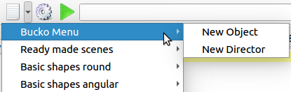

qtpovrayUser Insert Menu | September 22, 2017 |
 There are two root directories that are searched for your insert menus.
- System Menu - These are the menus distributed with qtpovray. They typically are installed in a read-only directory.
- User Insert Menu - Additional menus that you may optionally create yourself. These likely live in your home directory tree.
To that end, note the special file naming of the menu files:
2-characters space dash space actual name- Directory - directories are read and processed as submenus.
- .txt - The contents of the .txt file are inserted as your text.
- .png - An optional graphic that will be displayed as a tooltip.
/home/dick/povray/myInsertMenu.In that directory, I have a directory
00 - Bucko Menu.
In that directory, I have two files 10 - New Object.txt and 20 - New Director.txt.
+ myInsertMenu
+ 00 - Bucko Menu
+- 30 - New Object.txt
+- 40 - New Director.txt
This results in the Bucko Menu being inserted at the top of the menu
(because it starts with 00).